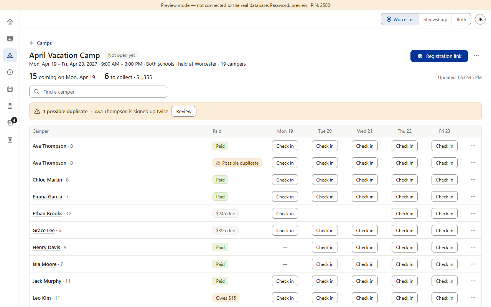
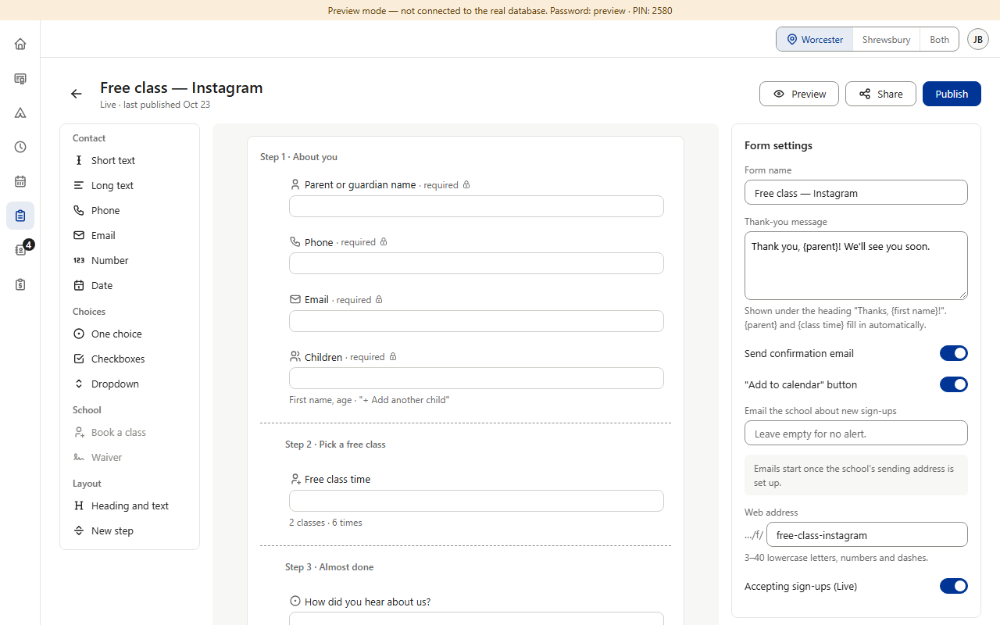
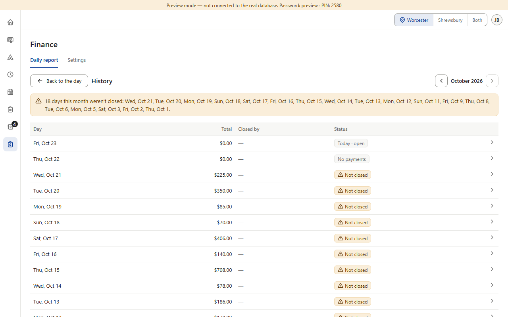
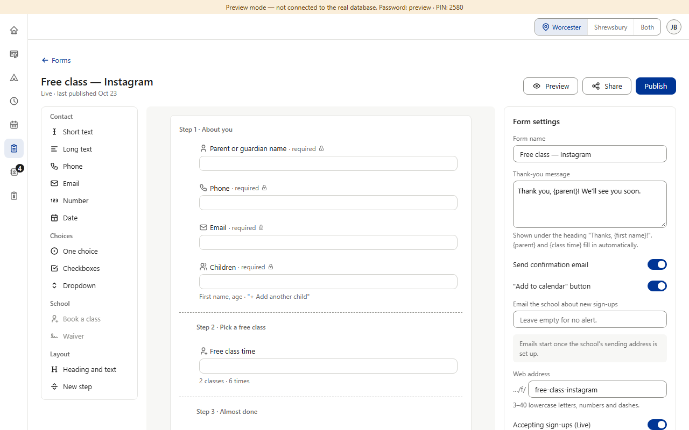
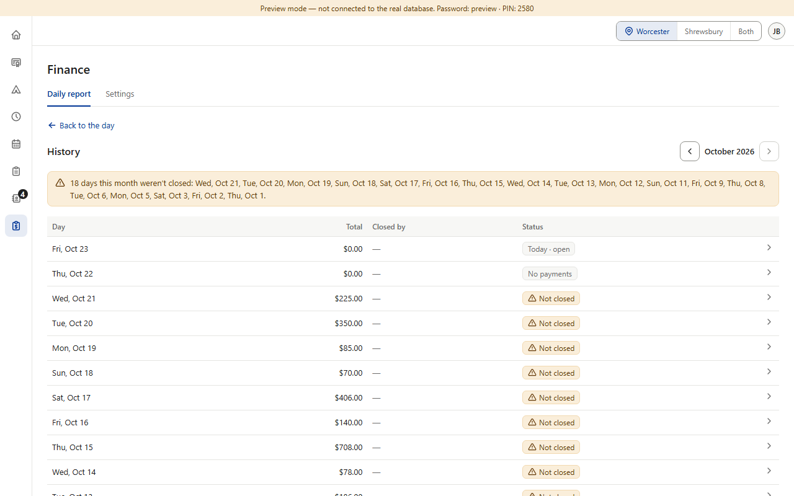

Approved in each section — and a rule already exists. Rule v0.59: a back link “← [place]” sits above the page title, and “any rail section with sub-pages uses this same pattern.” Color Belt, Star, Black Belt and Camps follow it. Two approved screens don't: Forms' builder has a bare arrow button beside the title (its mockup, v0.235), and Finance's History has an outline “Back to the day” button (v0.197). (Color Belt's “← Color belt testing” under a “Testing” title goes away when Star goes live — already planned.) The rest of the page frame — the “view only” line, “Both schools”, and where settings live — comes next as 15b–15d. (Preview screenshots at PC size · fake data)




